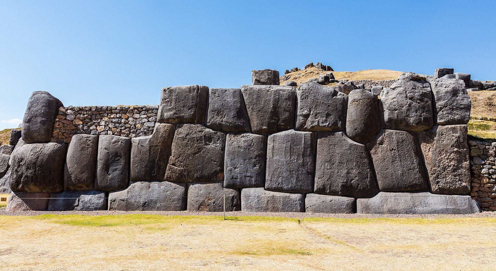
第6回
モルタルのない石垣の石は、自分の重さと、接する面の摩擦力だけで、互いを押さえている。
Diego Delso／CC BY-SA 4.0／Wikimedia Commons（サクサイワマンの石積み、2015年撮影）
2026-10-22／講義資料「第6回」（教科書 3.3節 p.39〜、例題3・6、3・7）と、補足資料（摩擦の法則、ねじ、ロープ・ベルト、転がり）の範囲。これまでの釣合いの問題では、床や壁が物体に及ぼす力を、面に垂直な 垂直抗力 だけと見てきた。しかし現実の面は、面に沿った力も出す。それが摩擦力である。この回の目標は、摩擦力を「いつも $\mu N$ の力」と思い込まず、釣合いから決まる未知数として扱い、動き出す直前だけ上限 $\mu_sN$ を使い、そのとき向きを正しく決めることである。
.warn で注記した。計算はすべて Python（sympy・numpy）で検算してある（draft/check_06.py）。第5回の最後（6章 (e)）で、台車を前向きに下り坂へ置いたとき、台車は 54° の坂で前に倒れる、と計算した。そしてそのすぐ後に、「実際には、その前に車輪が滑る」と注意した。本当だろうか。何度の坂で滑るのか。倒れるのと滑るのと、どちらが先に起こるのか。——答えは、床と車輪の間に働く摩擦力に上限があるかどうかで決まる。これが今回の問いである。
講義資料が挙げた「今日のポイント」は次の2つ。
以下、この2つを軸に、教科書 3.3節（固体摩擦、釣合い、例題 3・6、3・7）→ 補足（複数の接触面、ねじ、ロープ、転がり）→ 台車の運用の順に進む。
動機：床に置いた重い箱を、手で軽く押してみる。動かない。もう少し強く押す。まだ動かない。さらに強く押すと、ある瞬間に急に動き出す。箱は押している間ずっと釣合っている。つまり、押す力 $F$ と大きさが等しく、逆向きの力が、床から箱に働いているはずである。それが静止摩擦力である。押す力が大きくなれば、それに等しく大きくなる。
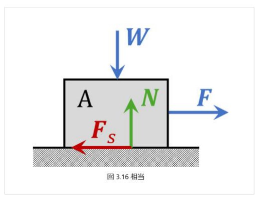
ここで大事なのは、(1.1) の等号が成り立つのは「動き出す直前」だけだという点である。動いていない間の摩擦力は $F_s=\mu_sN$ ではなく、釣合いの式から決まる。講義資料の第1の「今日のポイント」——「摩擦は $F=\mu N$ ［じゃない］！」——は、この意味である。次の数値例で確かめる。
水平な床に、質量 10 kg の箱が置かれている。床との間の静止摩擦係数は $\mu_s=0.5$、動摩擦係数は $\mu_k=0.4$。$g=9.81\ \mathrm{m/s^2}$。水平な力 $F$ で押すとき、(a) $F=20$ N、(b) $F=49$ N、(c) $F=60$ N のとき、箱に働く摩擦力はそれぞれいくらか。
解答
① 系：箱。外力は重さ $mg$（下）、垂直抗力 $N$（上）、押す力 $F$（右）、摩擦力（左）。
② 座標：右を $x$、上を $y$。
③④ 鉛直の釣合い：$N-mg=0$ より $N=mg=10\times9.81=98.1$ N。
⑤ 最大静止摩擦力 $F_{s\,\max}=\mu_sN=0.5\times98.1=\mathbf{49.05}$ N。動摩擦力 $F_k=\mu_kN=0.4\times98.1=\mathbf{39.24}$ N。
(a) $F=20$ N $<49.05$ N：動かない。水平の釣合いから $F_s=F=\mathbf{20}$ N（$\mu_sN=49.05$ ではない）。
(b) $F=49$ N $<49.05$ N：まだ動かない。$F_s=\mathbf{49}$ N（上限のすぐ手前）。
(c) $F=60$ N $>49.05$ N：動き出す。動いている間の摩擦力は $F_k=\mathbf{39.24}$ N（このとき釣合っていない。加速度は $a=\dfrac{60-39.24}{10}=2.08\ \mathrm{m/s^2}$。動力学の内容なので、結果だけ）。
⑥ 確かめ：(a)(b) は「静止」なので水平方向が釣合う ✓。動き出すと摩擦力が $49.05\to39.24$ N に下がる（$\mu_s>\mu_k$）。図1.1 のグラフでその段差が見える。
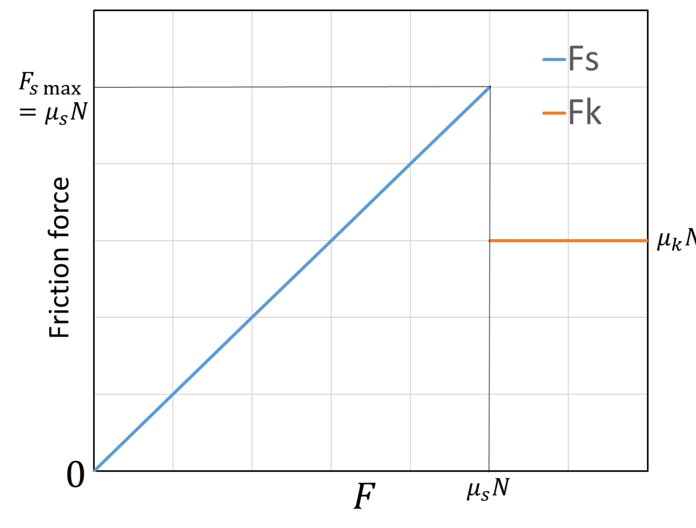
なめらかに見える面でも、顕微鏡で見れば凹凸がある。2つの面が接触するのは、凹凸の先どうしの接触部分だけである。この接触部分を引きはがそうとする（あるいはずらそうとする）ときに抵抗する力が摩擦力である。物体を強く押しつけると（$W<W'$）、接触部分が増えて、ずらすのに必要な力が増える。この関係を式にしたのが $F_{s\,\max}=\mu_sN$ である（押しつける力 $N$ に比例する）。
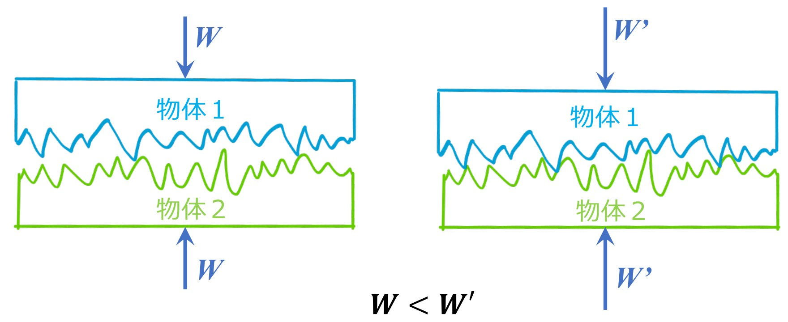
摩擦係数は、物質の組み合わせによって決まる。「アルミニウムの $\mu_s$」と言っても意味がなく、「アルミニウムと鉄の $\mu_s$」と言わなければならない（物質単体では論じられない）。講義資料の表（教科書 p.40 左上の表に相当）は、鉄との静止摩擦係数の例である。
| 材料（鉄との組み合わせ） | 静止摩擦係数 $\mu_s$ |
|---|---|
| 炭素 | 0.15 |
| アルミニウム | 0.82 |
| 鉄 | 0.52 |
| 銅 | 0.46 |
| 銀 | 0.32 |
| すず | 0.29 |
| 金 | 0.54 |
1番目の法則は意外に感じる。広い面ほど摩擦が大きそうに思えるが、広くなると単位面積あたりの圧力が下がるので、接触部分の総面積はほぼ $N$ だけで決まる。そのため、箱を寝かせても立てても、動き出す力はほぼ同じである。
PHOTO 1｜現実
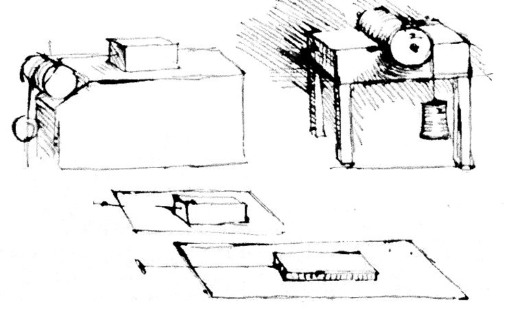
レオナルドの手稿には、箱を錘で引いて摩擦を調べる実験装置が描かれている。
レオナルド・ダ・ヴィンチ（手稿のスケッチ）／Public domain／Wikimedia Commons（摩擦計のスケッチ）
MITATE 1｜見立て
引き合う力が釣合っているあいだ、子どもたちは動かない。
喜多尾重政（北尾重政）／Public domain／Wikimedia Commons（『子供の綱引き』1781年ごろ、ホノルル美術館所蔵）
動機：1章で、摩擦力は「釣合いで決まる量」で、「上限がある量」だと分かった。では、釣合いの問題の中で、摩擦力をどう式に入れればよいか。講義資料（3・3・2「固体摩擦が作用する場合の釣合い」）の注意を、2つの原則にまとめる。
講義資料の言い方（スライド9）では、「摩擦力は［未知数］とする」「運動が［起こる直前］のみ $F_s=\mu_sN$」である（括弧は推定を含む）。この2つの原則から、摩擦の問題は次の2つの型に分かれる。
| 型 | 問い | 摩擦力の扱い |
|---|---|---|
| (I) 滑るか判定 | この状態で釣合っているか／滑らないか | 摩擦力を未知数 $F$ として釣合い式から求め、$F\le\mu_sN$ を確かめる（向きは自由） |
| (II) 限界を求める | 動き出す直前の力・角度・摩擦係数は？ | $F=\mu_sN$ と置く。向きは「運動しようとする向きの逆」に正しく設定する |
以下の例題は、(I) と (II) のどちらなのかを、毎回意識して読んでほしい。
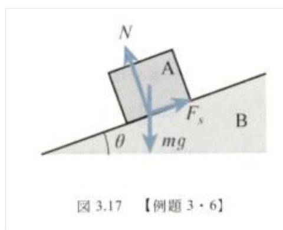
斜面の上に物体Aを置き、斜面の傾斜角 $\theta$ を0から増やしていく。$\theta=\theta_0$ で物体が滑り始めた。物体と斜面の間の静止摩擦係数 $\mu_s$ を求めよ。
解答
① 系：物体A。外力は、重さ $mg$（鉛直下向き）、斜面からの垂直抗力 $N$、斜面に沿った摩擦力 $F_s$。滑りは斜面の下向きに起ころうとするので、摩擦力は斜面の上向き（運動しようとする向きの逆）。
② 座標：斜面に平行な向き（上り）を $x$、斜面に垂直な向きを $y$。
③ 重さの成分：斜面に沿って下向きに $mg\sin\theta$、斜面に垂直に（面を押す向きに）$mg\cos\theta$。← 角 $\theta$ の斜面では、重力と「斜面に垂直な線」のなす角が $\theta$ になる。
④ 釣合い式：
$$x\text{ 方向}：F_s-mg\sin\theta=0,\qquad y\text{ 方向}：N-mg\cos\theta=0\qquad(2.1)\quad\text{（教科書 (3.65)）}$$
⑤ 解く：$F_s=mg\sin\theta$、$N=mg\cos\theta$。$\theta$ が小さいうちは、これで $F_s$ が求まる（型 I）。$\theta=\theta_0$ で滑り始める＝動き出す直前なので $F_s=F_{s\,\max}=\mu_sN$（型 II）。2式を代入して
$$\mu_s=\frac{F_{s\,\max}}{N}=\frac{mg\sin\theta_0}{mg\cos\theta_0}=\tan\theta_0\qquad(2.2)$$
⑥ 確かめ：$mg$ が約分されて消えた。つまり滑り出す角は物体の質量によらない（軽い物体も重い物体も、同じ斜面で同じ角度で滑り始める）。$\mu_s=0.5$ なら $\theta_0=\arctan0.5=26.6°$。$\mu_s\to0$ で $\theta_0\to0$（氷のような面）、$\mu_s=1$ で $45°$ ✓。
答 $\mu_s=\tan\theta_0$。
摩擦角には、斜面の話を超えた意味がある。接触面が物体に及ぼす力は、垂直抗力 $N$ と摩擦力 $F_s$ の合力 $R$ ひとつにまとめられる。$R$ が面の垂線となす角を $\beta$ とすると、$\tan\beta=F_s/N$。静止しているかぎり $F_s\le\mu_sN$ なので $\tan\beta\le\mu_s=\tan\lambda$、すなわち $$\beta\le\lambda\qquad(2.3)$$ 反力 $R$ は、垂線から摩擦角 $\lambda$ の範囲（3次元では円錐。摩擦円錐）の内側にあるかぎり、物体は滑らない。斜面の例では、重力と釣合う反力は鉛直上向きで、その垂線からの角が斜面の傾き $\theta$ に等しいので、$\theta\le\lambda$ なら静止し、$\theta=\lambda$ が限界である。これは (2.2) と同じ結論である。この見方は、ねじ（4.1）で使う。
PHOTO 2｜現実
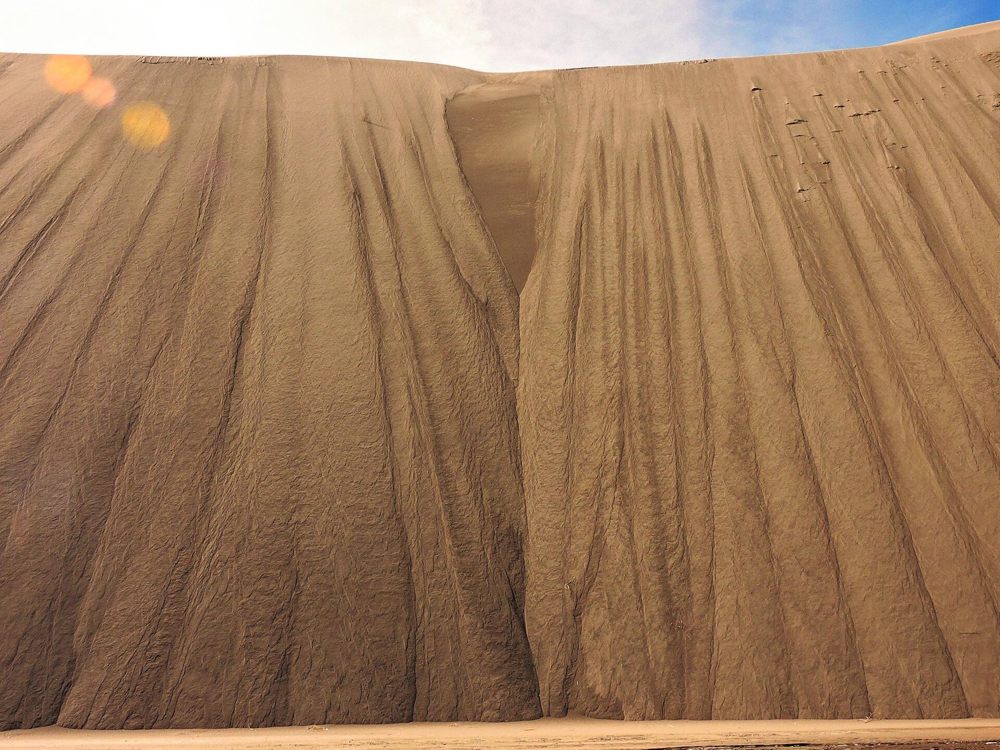
砂は、自分の摩擦角より急な斜面では崩れ、それより緩やかな斜面では止まる。
Great Sand Dunes National Park and Preserve（NPS）／Public domain／Wikimedia Commons（砂丘の急斜面、2018年撮影）
MITATE 2｜見立て
砂を盛り上げた向月台は、砂が崩れずにいられる角度の内側に収まっている。
Jmhullot／CC BY 3.0／Wikimedia Commons（銀閣寺の向月台、2012年撮影）
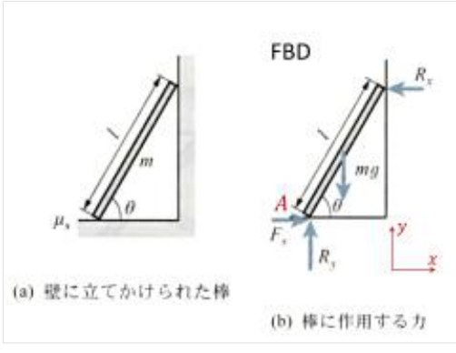
質量 $m$、長さ $l$ の一様な棒を、なめらかな鉛直の壁と、粗い水平な床の間に、床との角 $\theta$ で立てかける。棒と床の静止摩擦係数を $\mu_s$ とする。$\theta=60°$ のとき、棒は滑るか。（講義資料の図は解像度が低く $\mu_s$ の値が読めない。後で出てくる式 (3.70) $F_{s\,\max}=\mu_sR_y=mg/2$ から、$\mu_s=0.5$ と逆算できる。本教材の推定。）
解答例1（摩擦力 $F_s$ を壁の向き（$+x$）に仮定）
① 系：棒。点 A（下端）で床から $R_y$（上）と $F_s$（水平）、上端で壁から $R_x$（水平）、重心（中央）に重さ $mg$。
② 座標：図のとおり、右を $x$、上を $y$（壁は右）。基準点は A（未知の力 $R_y$、$F_s$ が通る点）。
③④ 力の釣合い、点 A まわりのモーメントの釣合い：
$$F_s-R_x=0,\qquad R_y-mg=0\qquad(2.4)$$
$$R_x\,l\sin60°-\frac{mg\,l}{2}\cos60°=0\qquad(2.5)$$
← 壁の反力 $R_x$ は、A から鉛直方向に $l\sin60°$ の高さに働くので腕は $l\sin60°$。重さは A から水平方向に $\frac l2\cos60°$ の位置を通るので腕は $\frac l2\cos60°$（腕は力の作用線への垂線の長さ）。
⑤ (2.5) から $R_x=\dfrac{mg\cos60°}{2\sin60°}$。(2.4) から $F_s=R_x$、$R_y=mg$：
$$F_s=R_x=\frac{mg\cos60°}{2\sin60°}=\frac{mg}{2\sqrt3}\simeq0.289\,mg\qquad(2.6)\quad\text{（教科書 (3.69)）}$$
これが、釣合いに必要な摩擦力である。一方、最大静止摩擦力は $F_{s\,\max}=\mu_sR_y=0.5\times mg=\dfrac{mg}{2}$（(3.70)）。
$$F_s=0.289\,mg<F_{s\,\max}=0.5\,mg$$
（釣合いに必要な力 $<$ 最大静止摩擦力）なので、棒は釣合いの状態、すなわち滑らない。
⑥ 確かめ：$R_x$ と $F_s$ は正の値（仮定した向きのとおり）✓。使っていない式は、A 以外の点（たとえば上端）まわりのモーメントで検算できる。
解答例2（$F_s$ を逆向き（$-x$）に仮定） 釣合い式は $-F_s-R_x=0$、$R_y-mg=0$、および (2.5)。(2.5) は変わらないので $R_x=\dfrac{mg}{2\sqrt3}$。よって $$F_s=-R_x=-\frac{mg}{2\sqrt3}$$ 答えが負になった。これは、仮定した向きとは逆向き、すなわち $+x$ 方向が正しい、という意味である。大きさ $\dfrac{mg}{2\sqrt3}$ は解答例1と同じ。摩擦力を未知数とするかぎり、向きをどちらに仮定しても、答えは同じ（原則2(a)）。
この例題は型 (I) である。$\theta$ を小さくしていくと、必要な摩擦力は変わる。(2.6) を一般の $\theta$ で書くと、(2.5) の $60°$ を $\theta$ に置き換えて $$F_s=R_x=\frac{mg\cos\theta}{2\sin\theta}=\frac{mg}{2\tan\theta}\qquad(2.7)$$ $\theta$ が小さい（棒が寝る）ほど、床で支える水平力が増える。滑らない条件は $F_s\le\mu_sR_y$、つまり $\dfrac{mg}{2\tan\theta}\le\mu_s\,mg$ より $$\tan\theta\ge\frac{1}{2\mu_s}\qquad(2.8)$$ $\mu_s=0.5$ なら $\tan\theta\ge1$、すなわち $\theta\ge45°$。$45°$ が滑る限界（型 II）で、このとき $F_s=F_{s\,\max}$ になる。$60°$ は余裕がある。図2.2 は、必要な摩擦力（赤）と出せる上限（青い破線）の関係である。
ここが、第2の「今日のポイント」である。斜面の上に質量 $m$ の物体 A があり、斜面に平行な力 $P$ で引き上げようとしている。静止摩擦係数は $\mu$（$\mu_s$）。
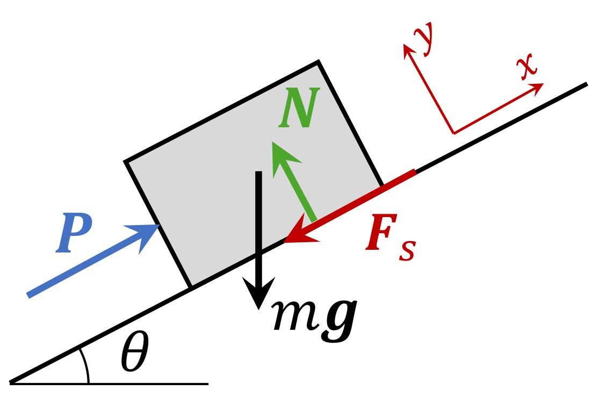
力 $P$（斜面に沿って上向き）を増加させていくとき、物体 A が動き出す直前の $P$ の大きさを求めよ。
解答例1（摩擦力 $F_s$ を斜面の下向きに仮定） 座標は斜面に沿って上向きを正に。 $$P-F_s-mg\sin\theta=0,\qquad N-mg\cos\theta=0\qquad(2.9)$$ 動き出す直前なので $F_s=F_{s\,\max}=\mu_sN$。(2.9) から $N=mg\cos\theta$、$F_s=\mu mg\cos\theta$。よって $$P=mg(\sin\theta+\mu\cos\theta)\qquad(2.10)$$
解答例2（$F_s$ を斜面の上向きに仮定） $$P+F_s-mg\sin\theta=0,\qquad N-mg\cos\theta=0\qquad(2.11)$$ $F_s=\mu_sN=\mu mg\cos\theta$ を代入して $$P=mg(\sin\theta-\mu\cos\theta)\qquad(2.12)$$
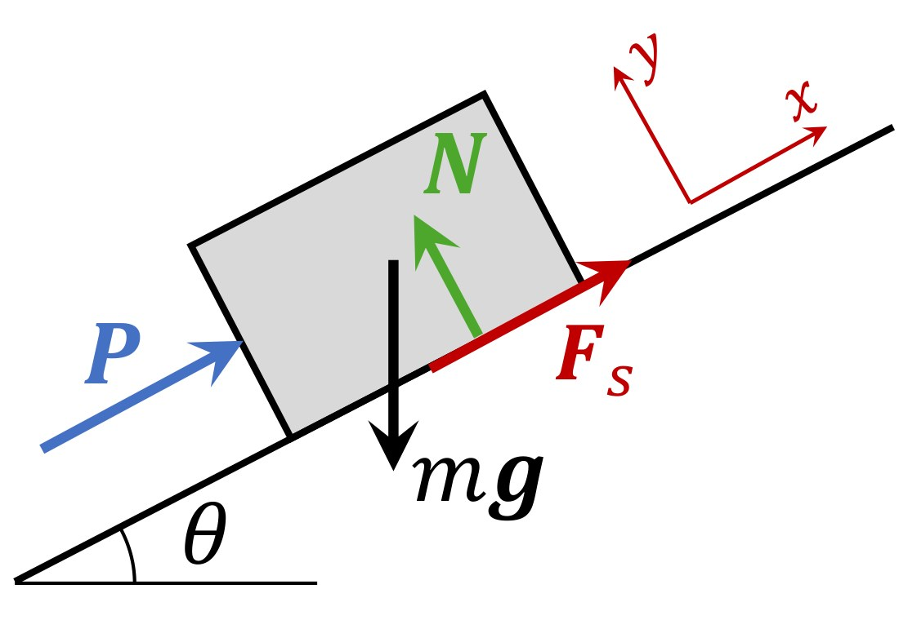
答えが違う。(2.10) では $+\mu\cos\theta$、(2.12) では $-\mu\cos\theta$。資料の問い：どちらが正しいか。解の矛盾点は？
答え：解答例1が正しい。理由を、運動しようとする向きから考える。問題は、「$P$ を増加させていって、物体 A が動き出す」場面である。動き出すとき、物体は斜面の上向きに動こうとしている。摩擦力はその逆向き＝斜面の下向きでなければならない。これが解答例1である。
解答例2 の仮定（摩擦力が上向き）は、「物体が下向きに動こうとしている」場面の向きである。実際、(2.12) の $P=mg(\sin\theta-\mu\cos\theta)$ は、$P$ を減少させていって、斜面を滑り落ちる直前の $P$ にほかならない。講義資料はこの対応を、次のように整理している。
矛盾点：解答例2 の $P=mg(\sin\theta-\mu\cos\theta)$ は、解答例1 の $P=mg(\sin\theta+\mu\cos\theta)$ より小さい。$P$ を 0 から増やしていくとき、解答例2 の値は解答例1 の値より先に通り過ぎる。その時点では物体はまだ動き出していない（上へ動く直前ではない）ので、「上へ動き出す直前」という前提と矛盾する。その時点の物体は、むしろ「下へ滑り落ちる直前」（摩擦力は上向きに上限 $\mu_sN$）の状態にある。
では、なぜ 3.7（棒）では向きをどちらに仮定してもよく、ここでは正しい向きにしなければいけないのか。違いは、摩擦力が未知数か既知かである。
摩擦力が上限に達するのは、動き出す直前の1点だけである。$P$ が (2.12) と (2.10) の間にあれば、物体は静止し、摩擦力は上向きにも下向きにも、$\mu_sN$ より小さな値で釣合う。まとめると、釣合って静止できる $P$ の範囲は $$mg(\sin\theta-\mu\cos\theta)\ \le\ P\ \le\ mg(\sin\theta+\mu\cos\theta)\qquad(2.13)$$ （左辺が負なら $P\ge0$ まで。たとえば $\tan\theta<\mu$、つまり $\theta$ が摩擦角より小さいときは、$P=0$ でも滑らない。）図2.3 は $\mu=0.3$ の場合。$\theta=30°$ では $0.240\,mg\le P\le0.760\,mg$。
PHOTO 3｜現実
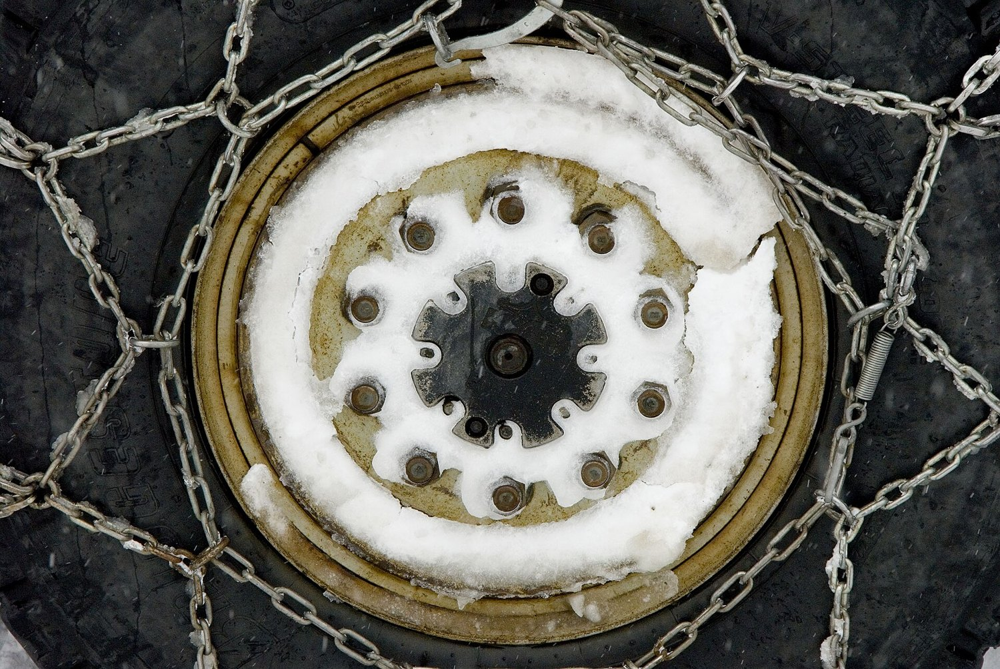
雪道では、タイヤに鎖を巻いて、路面との摩擦を稼ぐ。
Oregon Department of Transportation／CC BY 2.0／Wikimedia Commons（雪道のタイヤチェーン、2008年撮影）
MITATE 3｜見立て
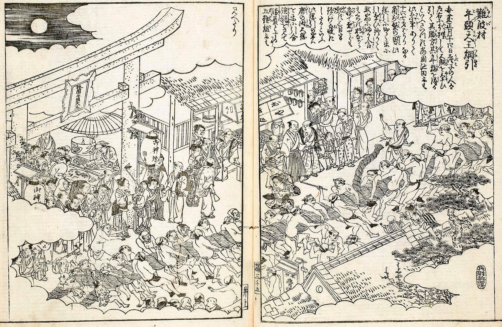
綱引きでは、引く向きは正反対で、勝負は足が地面から受ける摩擦力が決める。
竹原春朝斎／Public domain／Wikimedia Commons（『摂津名所図会』より牛頭天王の綱引き、1796〜98年ごろ）
型 II で $F=\mu_sN$ を使うとき、$N$ は釣合いの式から求める。$N=mg$ と決めつけてはいけない例を挙げる。
水平な床に、質量 20 kg の箱がある（$\mu_s=0.5$、$g=9.81\ \mathrm{m/s^2}$）。ひもを床と角 $\varphi$ をなす斜め上向きに引く。箱が動き出す直前の引く力 $P$ を $\varphi$ の関数で求め、$P$ が最小になる $\varphi$ と、そのときの $P$ を求めよ。
解答
① 系：箱。外力は重さ $mg$、垂直抗力 $N$、引く力 $P$（斜め上）、摩擦力 $F_s$（動こうとする向き（右）の逆＝左）。
② 座標：右を $x$、上を $y$。
③④ 釣合い式：
$$x：P\cos\varphi-F_s=0,\qquad y：N+P\sin\varphi-mg=0$$
⑤ 動き出す直前：$F_s=\mu_sN$。$y$ 式から $N=mg-P\sin\varphi$（$mg$ より小さい。引き上げる分だけ床を押す力が減る）。$x$ 式に代入して
$$P\cos\varphi=\mu_s(mg-P\sin\varphi)\ \Longrightarrow\ P(\cos\varphi+\mu_s\sin\varphi)=\mu_smg\ \Longrightarrow\ P=\frac{\mu_smg}{\cos\varphi+\mu_s\sin\varphi}\qquad(2.14)$$
$\varphi=0$（水平）のとき $P=\mu_smg=0.5\times196.2=98.1$ N。
最小：$P$ を最小にするには、分母 $D=\cos\varphi+\mu_s\sin\varphi$ を最大にすればよい。$\tan\lambda=\mu_s$ となる摩擦角 $\lambda$ を使うと $\cos\lambda=\dfrac1{\sqrt{1+\mu_s^2}}$、$\sin\lambda=\dfrac{\mu_s}{\sqrt{1+\mu_s^2}}$ なので
$$D=\sqrt{1+\mu_s^2}\,(\cos\varphi\cos\lambda+\sin\varphi\sin\lambda)=\sqrt{1+\mu_s^2}\cos(\varphi-\lambda)\quad\text{（加法定理）}$$
$\cos(\varphi-\lambda)\le1$ で、等号は $\varphi=\lambda$ のとき。したがって
$$\varphi=\lambda=\arctan\mu_s=26.6°,\qquad P_{\min}=\frac{\mu_smg}{\sqrt{1+\mu_s^2}}=\frac{98.1}{\sqrt{1.25}}=\mathbf{87.7}\ \text{N}$$
⑥ 確かめ：このとき $N=mg-P\sin\varphi=196.2-87.74\times0.4472=157.0$ N、$\mu_sN=78.5$ N。一方、$P\cos\varphi=87.74\times0.8944=78.5$ N ✓（釣合っている）。水平に引くより 10% 小さい。$\varphi$ が大きくなりすぎると、$N$ が減って得をする分より、引く力の水平成分が減る損のほうが大きくなる（図2.4）。
答 $P=\dfrac{\mu_smg}{\cos\varphi+\mu_s\sin\varphi}$。最小は $\varphi=\arctan\mu_s=26.6°$ で $P=87.7$ N。
最小の方向が摩擦角になるのは偶然ではない。$\varphi=\lambda$ は、箱が受ける反力（$N$ と $F_s$ の合力 $R$）の向きと、引く力 $P$ の向きが逆向きに一直線になる場合で、箱は3力（重さ、$P$、$R$）の釣合いになる。2.2 の「摩擦円錐」の考え方で見ても、最も小さい $P$ は、$R$ が円錐の縁にあるときである。
動機：2章では、摩擦面が1つの問題を扱った。しかし、物体が積み重なっていると、摩擦面が2つ以上になる。どの面が先に滑るかは、解く前には分からない。講義資料はこの状況の扱いを、次の例題で示している（スライド18〜22）。
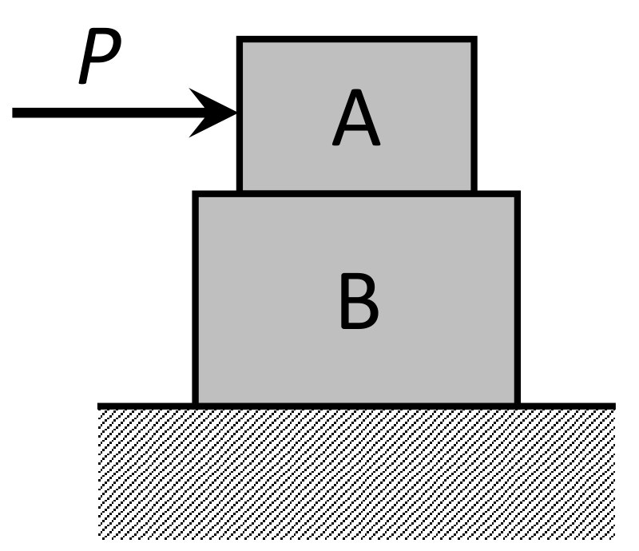
物体 A（質量 $m_A=3$ kg）が物体 B（$m_B=2$ kg）の上に載り、B は水平な床の上にある。A に水平力 $P$ を加えて増やしていく。摩擦係数は A–B 間が $0.3$、B–床間が $0.2$。物体 A が動き出す瞬間（直前）の力 $P$ を求めよ。（資料に合わせ $g=9.8\ \mathrm{m/s^2}$ とする。$m_Ag=29.4$ N、$m_Bg=19.6$ N。）
解答
① 系：A と B を別々に切り出す（接触面の力は作用・反作用で A と B に逆向きに働くため）。A：重さ $m_Ag$、床（B）からの垂直抗力 $N_A$、水平力 $P$、B からの摩擦力 $F_A$（$P$ と逆向き）。B：重さ $m_Bg$、A からの $N_A$（下向き）と $F_A$（右向き、反作用）、床からの $N_B$（上向き）と摩擦力 $F_B$（左向き）。
② 座標：鉛直（V）上向き、水平（H）右向きを正。
③④ 力の釣合い：
$$\text{A, V}：N_A-m_Ag=0\ (1),\qquad\text{A, H}：P-F_A=0\ (2)$$
$$\text{B, V}：N_B-N_A-m_Bg=0\ (3),\qquad\text{B, H}：F_A-F_B=0\ (4)$$
⑤ 解く：(1)(3) から $N_A=29.4$ N、$N_B=29.4+19.6=49.0$ N。(2)(4) から $P=F_A=F_B$（A の水平力が、そのまま B を通って床へ伝わる）。未知数は $P$、$F_A$、$F_B$、$N_A$、$N_B$ の5つ、式は4つ。1つ足りない。足りない1式は、「どの面が滑り出すのか」から来る。摩擦面が2つあるので、解く前にはどちらが先に滑るか分からない。そこで、一方が滑る（動き出す直前）と仮定して解き、答えに矛盾がなければ仮定は正しい、矛盾があれば仮定は誤りと判定する。
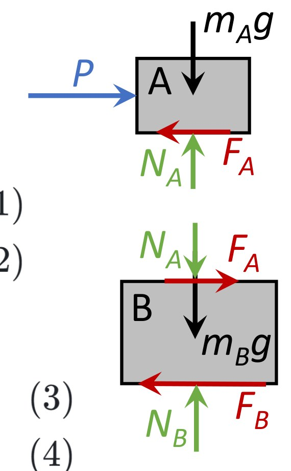
仮定1：B と床の間が滑る（B が A を乗せたまま動き出す）。このとき床の摩擦は上限： $$F_B=F_{B\,\max}=0.2\,N_B=0.2\times49.0=9.8\text{ N}\qquad(5)$$ (4) から $F_A=F_B=9.8$ N、(2) から $P=9.8$ N。ここで A–B 間の最大静止摩擦力は $F_{A\,\max}=0.3\,N_A=0.3\times29.4=8.82$ N。ところが $F_A=9.8$ N $>F_{A\,\max}=8.82$ N。A–B 間が支えられる摩擦力（8.82 N）を超えている。→ 矛盾。仮定1は誤り。（実際には、$P$ が 8.82 N に達した時点で A–B 間が先に滑り出す。）
仮定2：A と B の間が滑る（A が B の上を滑る）。このとき A–B の摩擦は上限：
$$F_A=F_{A\,\max}=0.3\,N_A=8.82\text{ N}\qquad(5)'$$
(2) から $P=\mathbf{8.82}$ N、(4) から $F_B=8.82$ N。B–床間の最大静止摩擦力は $F_{B\,\max}=0.2\,N_B=9.8$ N なので、$F_B=8.82$ N $<9.8$ N。B は床の上で静止したまま保てる（B–床間は滑らない）。→ 矛盾なし。仮定2は正しい。
⑥ 確かめ：（別の見方）A も B も動いていないとき、必要な摩擦力は $F_A=F_B=P$。A–B 間が耐えられるのは $P\le8.82$、B–床間は $P\le9.8$。どちらの条件も満たす最大の $P$ が 8.82 N。すなわち耐えられる上限が小さいほうの面が、先に滑る。
答 $P=\mathbf{8.82}\ \text{N}$（A と B の間が滑り出す）。
複数の接触面の問題の型は、次のとおり。
① 物体を別々に切り出し、FBD を描く。② 垂直抗力 $N$ を、釣合いから先に決める。③ 各面の上限 $\mu N$ を計算する。④ 上限の小さい面が先に滑る、と仮定して解き、他の面で $F\le\mu N$ を確かめる（満たさなければ仮定を変える）。
PHOTO 4｜現実
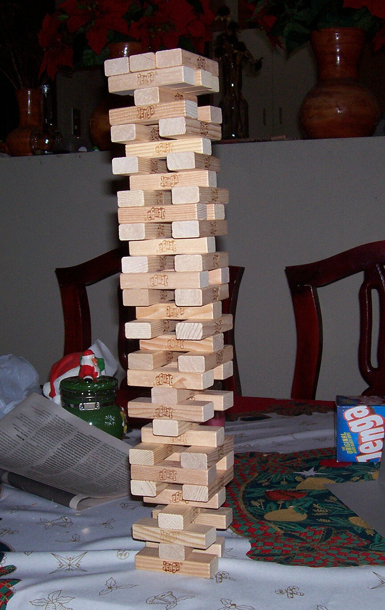
積み木の塔は、1本引き抜くとき、いちばん弱い面から先に滑る。
Bobjgalindo／CC BY-SA 4.0／Wikimedia Commons（ジェンガの塔、2005年撮影（一部を切り出し））
MITATE 4｜見立て
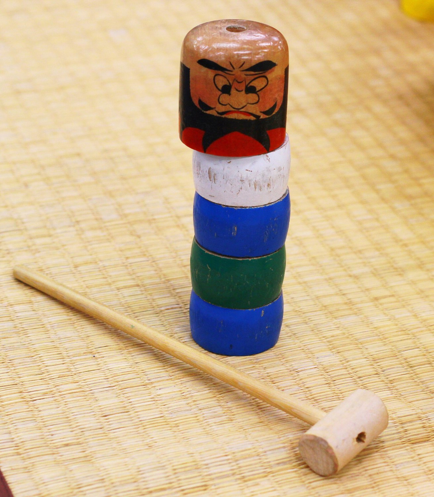
だるま落としは、槌で打った一段だけが滑り、上の段は、そのまま下に載り直す。
Japanexperterna.se／CC BY-SA 3.0／Wikimedia Commons（だるま落とし、2013年撮影）
講義資料の「2. 摩擦に関係する機械要素など」を、1〜3章の道具で導く。ねじは斜面と摩擦角（2.2）、ロープは微小部分の釣合いと積分、転がりはモーメントの釣合いである。
動機：ボルトを締めるとき、ねじ面の摩擦に打ち勝って回すのに、どれだけの力が要るか。逆に、締めたボルトは、なぜ緩まないのか。
モデル：ねじ面はらせんである。これを平面に展開すると、傾斜角 $\alpha$（リード角）の斜面になる。ナットはその上のくさび状の物体と見なせる。ねじの軸方向の力を $Q$、ねじを回す力（接線方向）を $P$、斜面からの垂直抗力を $N$、摩擦力を $F$ とする。（以下は、講義資料 p.25〜27 の導出。）
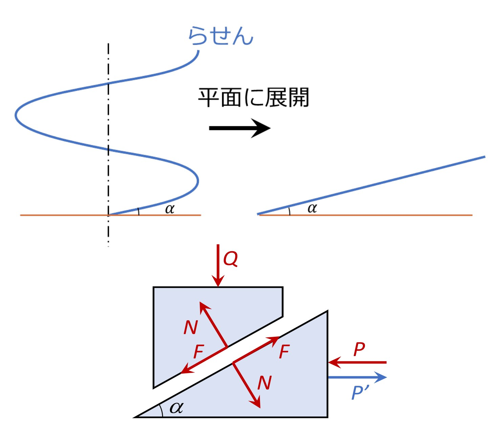
① 系：くさび。締めるとき（ナットが斜面を上る向きに動こうとするとき）、摩擦力 $F$ は斜面の下向き（運動の逆）。斜面は水平に対して $\alpha$、垂直抗力 $N$ は斜面に垂直。
② 座標：水平（$P$ の向き）と鉛直（$Q$ の向き）。$N$ の成分は水平に $N\sin\alpha$、鉛直に $N\cos\alpha$。$F$ は斜面に沿うので、水平に $F\cos\alpha$、鉛直に $F\sin\alpha$。← 斜面の向きが水平から $\alpha$ なので、斜面に沿う力は $\cos\alpha$ が水平成分、垂直な力は $\sin\alpha$ が水平成分。
③④ 釣合い式（講義資料の式 (1)(2)）： $$N\sin\alpha+F\cos\alpha-P=0\qquad(4.1)$$ $$N\cos\alpha-F\sin\alpha-Q=0\qquad(4.2)$$ 動き出す直前なので $F=\mu N=N\tan\lambda$（$\tan\lambda=\mu$、$\lambda$ は摩擦角） (4.3)
⑤ (4.3) を (4.1)(4.2) に代入して $F$ を消す： $$P=N(\sin\alpha+\tan\lambda\cos\alpha),\qquad Q=N(\cos\alpha-\tan\lambda\sin\alpha)$$ 両式の比をとると $N$ が消える。分子分母を $\cos\alpha$ で割って $$\frac PQ=\frac{\sin\alpha+\tan\lambda\cos\alpha}{\cos\alpha-\tan\lambda\sin\alpha}=\frac{\tan\alpha+\tan\lambda}{1-\tan\alpha\tan\lambda}=\tan(\alpha+\lambda)$$ 最後の変形は、$\tan$ の加法定理 $\tan(a+b)=\dfrac{\tan a+\tan b}{1-\tan a\tan b}$ による（これは $\sin(a+b)=\sin a\cos b+\cos a\sin b$ と $\cos(a+b)=\cos a\cos b-\sin a\sin b$ の比）。よって $$P=Q\tan(\alpha+\lambda)\qquad(4.4)$$
(4.4) は、「斜面の傾き $\alpha$ に、摩擦角 $\lambda$ を足した傾きの斜面」を上るのに必要な力と同じ、という意味である。摩擦がなければ（$\lambda=0$）$P=Q\tan\alpha$。
ねじを緩める（逆に回す）とき：ナットの運動の向きが逆になるので、摩擦力 $F$ の向きも逆になる。(4.1)(4.2) の $F$ の符号を変えて同様に解くと、水平方向に必要な力 $P'$（図の青い矢印の向き）は $$P'=-Q\tan(\alpha-\lambda)\qquad(4.5)$$ となる。符号で場合分けする。
数値例（自作の仮定）：ピッチ $p=2$ mm、有効径 $d=10$ mm のねじ（リード角 $\tan\alpha=\dfrac{p}{\pi d}$）、$\mu=0.15$。$\alpha=\arctan\dfrac{2}{10\pi}=3.64°$、$\lambda=\arctan0.15=8.53°$。締める力：$P/Q=\tan(3.64°+8.53°)=\tan12.17°=\mathbf{0.216}$（軸力の約 22%）。緩める力：$P'=-Q\tan(3.64°-8.53°)=+0.0855\,Q>0$。$\alpha<\lambda$ なので自己ロックする（振動などで摩擦が減らなければ、自然に緩まない）。
動機：船は、細いロープ数巻きで、巨大な力に耐える。ロープを係留杭（ボラード）に巻き付けると、手で引く小さな力で、大きな力を支えられる。巻き数と力の関係はどうなっているか。
問題：ロープを円柱（半径は問わない）に角 $\alpha$ だけ巻き付けて、両端を引く。両端の張力を $T_1$、$T_2$ とする。ロープが滑り出す直前の比 $T_2/T_1$ を求める。（講義資料 p.28〜30。）
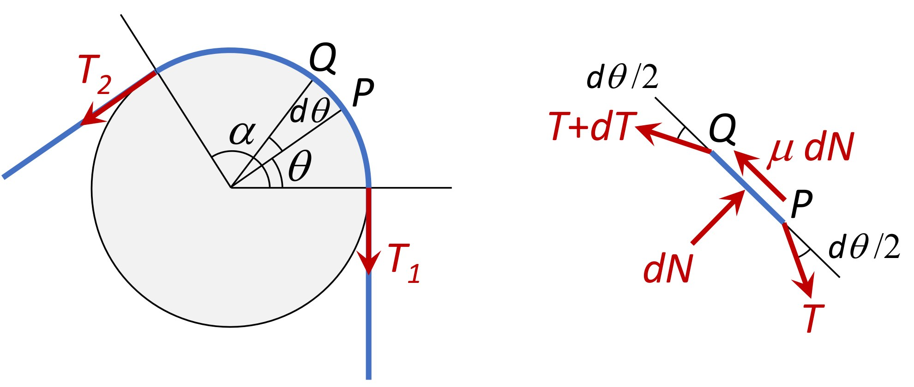
① 系：巻き付いたロープのうち、中心角 $d\theta$ の微小部分 PQ だけを切り出す。ロープの張力は、巻き付いた区間でゆるやかに変化するので、PQ の一端で $T$、他端で $T+dT$（$dT$ は微小）。
② 座標：PQ の中央での半径方向と円周方向（接線方向）。各端の張力は接線方向で、PQ の中央の接線に対して $\dfrac{d\theta}2$ だけ傾いている。
③ 半径方向の釣合い：2つの張力の、円の中心向きの成分と、円柱からの垂直抗力 $dN$（外向き）が釣合う： $$T\sin\frac{d\theta}{2}+(T+dT)\sin\frac{d\theta}{2}=dN\qquad(4.6)$$ $d\theta$ は微小なので $\sin\dfrac{d\theta}2\simeq\dfrac{d\theta}2$（$\varepsilon$ が小さいとき $\sin\varepsilon\simeq\varepsilon$。ラジアンで測った角の弧と、その角の正弦はほぼ等しい）。$dT\,d\theta$ は2つの微小量の積なので無視できる： $$T\,d\theta=dN\qquad(4.7)$$
④ 円周方向の釣合い：2つの張力の差 $dT$ と、摩擦力 $\mu\,dN$（動き出す直前なので最大静止摩擦力 $\mu\,dN$）が釣合う（$T_2$ 側が小さい張力の側として、向きの関係から）： $$dT+\mu\,dN=0\qquad(4.8)$$ ← 向きの理由：ロープは大きい張力の側 $T_1$ へ滑り出そうとする。摩擦力はその逆向き（小さい張力の側）に働くので、$T$ は $\theta$ とともに減る。
⑤ (4.7) の $dN$ を (4.8) に代入：$dT=-\mu T\,d\theta$。$T$ のものを左辺に集めて、接触部分全体（$\theta=0$ から $\alpha$、張力 $T_1$ から $T_2$）で積分する： $$\int_{T_1}^{T_2}\frac{dT}{T}=-\mu\int_0^{\alpha}d\theta\ \Longrightarrow\ \ln\frac{T_2}{T_1}=-\mu\alpha$$ $$T_2=T_1e^{-\mu\alpha}\qquad(4.9)$$
(4.9) の読み方：$T_1$ を大きい張力（荷重を吊るす側）、$T_2$ を小さい張力（手で引く側）とすると、滑らずに保持できる最小の手の力は $T_2=T_1e^{-\mu\alpha}$。巻き角 $\alpha$ が増えるほど、指数関数的に小さい力で保持できる（図4.1）。
質問：一本のロープなら、静止しているとき両端の張力 $T_1$、$T_2$ は一致するのでは？
答え：「一本のロープだから張力が一致する」が成り立つのは、ロープの途中に、ロープに沿った向きの外力が働いていないときだけである。巻き付けた部分には、円柱からの摩擦力（ロープに沿った向きの力）が働く。だから一致しない。
① 一致する理由を確かめる：質量の無視できるロープの一部を切り出し、ロープに沿った方向の釣合いを書く。
(a) 途中に外力がない場合（空中に張った直線のロープ、摩擦のない滑車にかけたロープ）：左右の張力の差は $0$。よって $T_1=T_2$。これが「静止なら一致する」の正体である。
(b) 途中に摩擦力がある場合（本節）：微小部分 PQ の接線方向の釣合いは $dT$（張力の差）と摩擦力 $f$ の釣合いになり、$dT+f=0$（式 (4.8) で $f=\mu\,dN$ とした）。$f\neq0$ なら $dT\neq0$ で、張力は場所とともに変わる。← 理由：張力は「ロープの隣り合う部分が引き合う力」。その部分に別の力（摩擦）が加われば、両側の引き合いに差がなければ釣合わない。
② 静止していても一致しない例（手で握ったロープ）：ロープの途中を握ると、握りの手前と先で張力は違ってよい。違いを埋めるのが、手とロープの間の摩擦力である。柱への巻き付けは、これを「柱が長い距離で握っている」状態にしたものである。
③ 静止のとき、$T_1$、$T_2$ はどうなるか：摩擦力 $f$ は釣合いから決まる未知数（本回の主題。$f\le\mu N$ の範囲で任意に出る）なので、静止している間は $T_1$ と $T_2$ の差にも幅がある。(4.9) は、その幅の端、「滑り出す直前」だけの関係である。 $$e^{-\mu\alpha}\,T_1\ \le\ T_2\ \le\ e^{\mu\alpha}\,T_1\qquad(\text{静止しているための条件})$$ ← $T_1$ 側へ滑り出す直前が左端（$T_2=e^{-\mu\alpha}T_1$）、$T_2$ 側へ滑り出す直前が右端（役割を入れ替えた同じ式）。
④ 数値で確かめる（例題7と同じ $\mu=0.4$、1巻き $\alpha=2\pi$、$T_1=mg$）：$e^{-0.4\times2\pi}=0.0810$、$e^{0.4\times2\pi}=12.35$ なので、静止できる範囲は $$0.0810\,mg\ \le\ T_2\ \le\ 12.35\,mg$$ つまり、$T_2=mg$（一致）も静止の1つの場合だが、$T_2=0.5\,mg$ でも $T_2=5\,mg$ でも滑らない。一致するのは、この範囲のうち摩擦力が $0$ になる特別な点にすぎない。
⑤ 極限で確かめる：$\mu=0$ とすると $e^{\mp\mu\alpha}=1$ で、範囲は $T_2=T_1$ の1点になる。「摩擦がなければ一致」という①(a) に戻る ✓。
まとめ：$T_1=T_2$ を前提にしないのは、ロープに沿った摩擦力がある（$\mu\ne0$）からである。静止でも張力の差は摩擦力が受け持ち、(4.9) はその差が最大になる、滑り出す直前の値を表す。
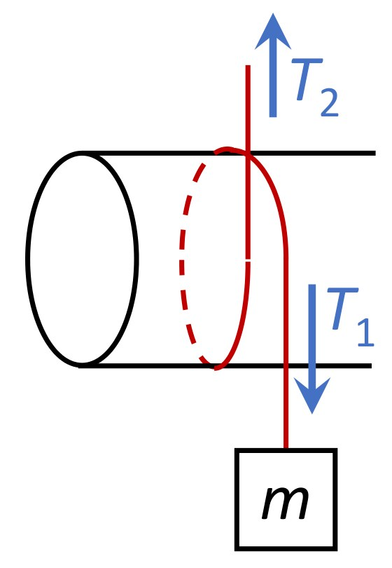
図のように、ロープを柱に1巻きしてから、おもり（質量 $m$）を吊るす。おもりを支える力（ロープの他端を引く力 $T_2$）はどうなるか。ロープと柱の間の摩擦係数は $0.4$。2巻きの場合は。
解答
① 系：ロープ（式 (4.9) が成り立つ）。おもりの側の張力 $T_1=mg$（おもりの釣合い）。
②③④ (4.9) を使う：1巻き $\alpha=2\pi$：
$$T_2=e^{-\mu\alpha}T_1=e^{-0.4\times2\pi}\,mg=\mathbf{0.0810}\,mg\simeq\frac{1}{12.35}mg$$
⑤ 2巻き：$\alpha=4\pi$：$T_2=e^{-0.4\times4\pi}mg=\mathbf{0.00656}\,mg\simeq\dfrac{1}{152.4}mg$。
⑥ 確かめ：$e^{-0.4\times2\pi}=e^{-2.513}=0.0810$。ロープをもう1巻きすると、前の値の2乗（$0.0810^2=0.00656$）になる ✓（$e^{-a}\cdot e^{-a}$）。1巻きで約 $\frac1{12}$、2巻きで約 $\frac1{150}$ になる。100 kgf の荷物を支えるのに、2巻きすれば 0.66 kgf の力で足りる。
答 1巻き：$T_2=0.081\,mg$、2巻き：$T_2=0.00656\,mg$。
PHOTO 5｜現実
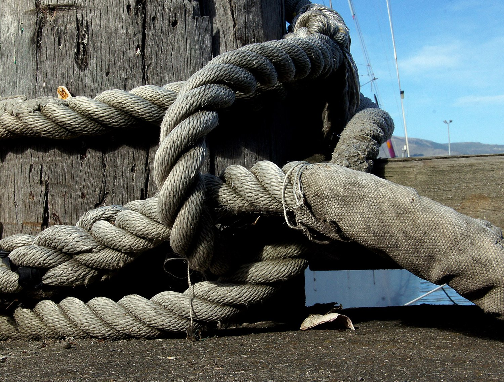
係船柱に巻いた綱は、巻き数が増えるほど、指数関数的に小さな力で船を留める。
Bernard Spragg. NZ／CC0／Wikimedia Commons（係船柱に巻かれた綱）
MITATE 5｜見立て
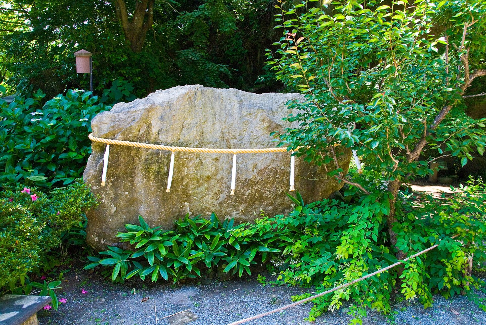
大石を一巻きする縄は、巻き付け角 α を 2π ぶんだけ稼いでいる。
Urashimataro／Public domain／Wikimedia Commons（鎌倉・明月院の岩の注連縄、2008年撮影）
ロープ・ベルトの式 (4.9) は、摩擦力が働く向き（滑ろうとする向き）で $T_1>T_2$ の関係が決まる点に注意する。ベルト駆動では、ベルトが滑らずに動力を伝えられるのは、張力比が $e^{\mu\alpha}$ 以下のときである。
動機：円柱（車輪）は、滑らずに転がるとき、摩擦力は $\mu N$ より小さい。それでも水平に押さないと転がり続けないのはなぜか。（理想的な剛体の円柱なら、接触点は1点で、床の反力は真下を通り、モーメントを生まない。）
モデル：実際の円柱と床は、接触部分がわずかに変形し、接触点が1点ではなくある幅になる。この変形から生じる反力 $R$ の作用点が、円柱の真下から、進む向きに少し前へずれる。重さ $W$ が円柱の中心にあるのに、反力が中心の真下から $a$ だけずれた点 A に働くため、転がりを妨げる向きのモーメント $Wa$ が生じる。（講義資料 p.34。）
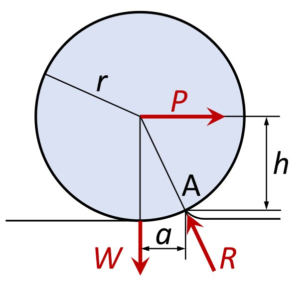
点 A まわりのモーメントの釣合い（反力 $R$ は A を通るのでモーメントなし）： $$Wa-Ph=0\qquad(4.10)\quad\text{（講義資料 式 (10)）}$$ 重さ $W$ の腕は $a$、押す力 $P$ の腕は $h$。いま $h\simeq r$（変形は微小で、点 A は接地点とほぼ同じ）なので $$P=a\,\frac{W}{r}\qquad(4.11)\quad\text{（講義資料 式 (11)）}$$ この $a$ を転がり抵抗係数と呼ぶ（coefficient of rolling resistance）。〔推定：スライドの空欄は画像内で読み取れず、標準的な名称で埋めた〕$a$ は長さの次元を持つ（$\mu$ は無次元）。
数値例（自作の仮定）：鉄の車輪が鉄のレール上を転がる場合、$a$ は 0.5 mm 程度のオーダーと言われる〔本教材の数値の仮定。出典は未確認〕。半径 $r=0.3$ m、$W=500$ N のとき、$P=\dfrac{0.5\times10^{-3}}{0.3}\times500=0.83$ N。同じ物体を引きずるのに必要な力は、$\mu=0.3$ として $\mu W=150$ N。転がしたほうが約 180 分の 1 の力で済む。車輪が発明された理由である。
PHOTO 6｜現実
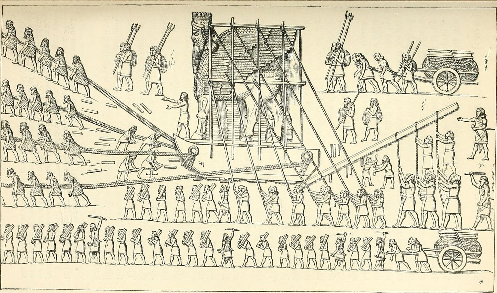
アッシリアの巨像は、橇の前に丸太を敷き、綱で引いて運ばれた。
Internet Archive Book Images（Layard, 1882）／No restrictions／Wikimedia Commons（レイヤード『ニネヴェとバビロン』の挿絵）
MITATE 6｜見立て
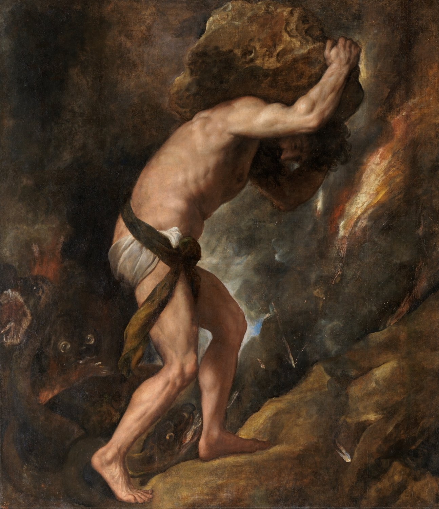
坂の上へ岩を押し上げる男は、手を休めた瞬間、岩の重さだけで元に戻される。
ティツィアーノ／Public domain／Wikimedia Commons（《シーシュポス》1548〜49年、プラド美術館所蔵）
序の問いに答える。第5回6章の台車（質量 44 kg、重心 G は後輪の接地点から前へ $x_G=0.350$ m、高さ $z_G=0.180$ m、前後車輪の接地点の間隔 0.6 m、バッテリーを前に置くと $x_G=0.441$ m。数値は第5回の自作の仮定）を、前を下にして傾斜 $\varphi$ の坂に置く。
第5回の台車（バッテリーを後ろに置いた状態）を、前を下にして傾斜 $\varphi$ の坂に停める。車輪はブレーキで回らないとし、車輪と路面の静止摩擦係数を $\mu=1.0$ とする（乾いた路面のゴムタイヤを想定した仮定値）。(a) 台車が滑り出す角 $\varphi_s$ を求めよ。(b) 第5回 6章 (e) の倒れる角 $\varphi_c$ と比べて、どちらが先に起こるか。(c) バッテリーを前に置いたらどうなるか。(d) $\varphi=30°$ のとき、後輪・前輪の荷重と、釣合いに必要な摩擦力を求め、滑らない最小の $\mu$ を求めよ。
解答
① 系：台車全体（重さを G に集めた1つの力に置き換える。第5回 1.2 の「等価」）。外力は、重さ $W=Mg$、前後輪の垂直抗力 $N_f$、$N_r$（坂に垂直）、摩擦力の合計 $F$（坂に沿って上向き）。
② 座標：坂に沿って下向きを $x$、坂に垂直に上向きを $z$。
③ 重さの成分：坂に沿って下向きに $W\sin\varphi$、坂に垂直に（面を押す向き）$W\cos\varphi$。
④ 釣合い式：
$$x：W\sin\varphi-F=0,\qquad z：N_f+N_r-W\cos\varphi=0\qquad(5.1)$$
（$x$ 軸は下向きなので、重さの成分 $W\sin\varphi$ が正、坂の上向きの摩擦力 $F$ が負。）
(a) ⑤ 滑り出す直前：$F=\mu(N_f+N_r)=\mu W\cos\varphi$。(5.1) の2式から $W\sin\varphi=\mu W\cos\varphi$ より
$$\tan\varphi_s=\mu\ \Longrightarrow\ \varphi_s=\arctan1.0=\mathbf{45.0°}$$
（例題2の斜面と同じ結論：質量によらず $\tan\varphi_s=\mu$。）
(b) 倒れる角は第5回 6章 (e) で求めた $\tan\varphi_c=\dfrac{0.6-x_G}{z_G}=\dfrac{0.250}{0.180}=1.39$、$\varphi_c=\mathbf{54.3°}$。$\varphi_s=45.0°<\varphi_c=54.3°$ なので、坂を急にしていくと、先に滑り出す。台車は、倒れる前に滑る。第5回の注意のとおりである。
(c) バッテリー前（$x_G=0.441$ m）：$\tan\varphi_c=\dfrac{0.600-0.441}{0.180}=0.886$、$\varphi_c=\mathbf{41.5°}$。滑る角は 45.0° のまま。$41.5°<45.0°$ なので、先に倒れる（前に倒れる直前に、後輪が浮き上がる）。同じ台車でも、バッテリーの置き場所によって、滑りが先か倒れが先かが逆転する。
(d) $\varphi=30°$（バッテリー後ろ、$W=44\times9.81=431.6$ N）：釣合いに必要な摩擦力 $F=W\sin30°=\mathbf{215.8}$ N。垂直抗力の合計は $W\cos30°=373.8$ N。前輪まわりのモーメントの釣合いから（重さの腕は坂に沿って $(0.6-x_G)$、高さ $z_G$）
$$N_r\times0.6=W\bigl[(0.6-x_G)\cos\varphi-z_G\sin\varphi\bigr]$$
$$N_r=\frac{431.6\,(0.250\times0.8660-0.180\times0.5)}{0.6}=\frac{431.6\times0.1265}{0.6}=\mathbf{91.2}\ \text{N},\qquad N_f=373.8-91.2=\mathbf{282.6}\ \text{N}$$
滑らない最小の $\mu$：$F\le\mu(N_f+N_r)$ より $\mu\ge\tan30°=\mathbf{0.577}$。
⑥ 確かめ：$N_r=0$ となる $\varphi$ が倒れる角（(b) と同じ $\tan\varphi=0.250/0.180$）✓。$N_r>0$（30° では後輪はまだ路面にいる）✓。$\mu=1.0$ の限界は $\varphi=45°$。
答 (a) 45.0°。(b) 滑りが先（倒れる角は 54.3°）。(c) 41.5° で倒れる（倒れが先）。(d) $N_r=91.2$ N、$N_f=282.6$ N、$F=215.8$ N、$\mu\ge0.577$。
図5.2 で、赤い曲線と破線の交点が分かれ目である。バッテリーが後ろなら $\mu=1.39$（それより大きい $\mu$ なら倒れが先）、前なら $\mu=0.886$ である。摩擦が大きい路面ほど、倒れる側が先になる。タイヤの摩擦が非常に大きいレース用タイヤでは、急坂で車が滑るよりも先に転倒する。
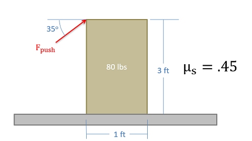
80 lb の一様な箱（幅 1 ft、高さ 3 ft）が水平な床に立っている。箱と床の静止摩擦係数は $\mu_s=0.45$。箱の左上の角に、水平から $35°$ 上向きの力 $F$ を加えて、0 から増やしていく。箱は滑るか、倒れるか。どちらが先に起こり、そのときの $F$ はいくらか。
出典：Moore ほか, Mechanics Map, 7.2 Slipping vs. Tipping, 例題3（CC 表示・継承、版は不明）。公式解答（滑り 33.42 lb、転倒 13.20 lb、転倒が先）と照合済み。
解答
① 系：箱。外力は、重さ $W=80$ lb（重心＝箱の中央）、押す力 $F$（左上の角、右上向き）、床の反力（垂直抗力 $N$、摩擦力 $f$）。
② 座標：右を $x$、上を $y$。
③④ 力の釣合い：$F\cos35°-f=0$、$N+F\sin35°-W=0$（$N=W-F\sin35°$。押す力の上向き成分の分だけ $N$ が減る）。
⑤-1 滑り（型 II）：$f=\mu_sN$ とおく：$F\cos35°=0.45(80-F\sin35°)$ より
$$F=\frac{0.45\times80}{\cos35°+0.45\sin35°}=\frac{36}{0.8192+0.2581}=\mathbf{33.42}\ \text{lb}$$
⑤-2 転倒：倒れる直前は、床の反力が右下の角 A に集中する（箱が角 A を支点に回り始める）。点 A まわりのモーメントの釣合いをとる。A を通る $N$ と $f$ は消える。重さ（A から左へ 0.5 ft）は元に戻す向き：$W\times0.5=40$ lb·ft。押す力 $F$ は、左上の角（A から左へ 1 ft、上へ 3 ft）に働くので、成分 $F\cos35°$ の腕は 3 ft、$F\sin35°$ の腕は 1 ft（どちらも倒す向き）：
$$F\,(3\cos35°+1\cdot\sin35°)=40\ \Longrightarrow\ F=\frac{40}{2.4575+0.5736}=\mathbf{13.20}\ \text{lb}$$
⑥ 確かめ：小さいほうが先に起こる：転倒 13.20 lb < 滑り 33.42 lb なので、先に転倒する。転倒の瞬間（$F=13.20$）の摩擦力は $f=F\cos35°=10.81$ lb、上限は $\mu_s(W-F\sin35°)=0.45\times(80-7.57)=32.59$ lb。$10.81<32.59$ で、床は滑らず支えられている ✓（転倒の計算に摩擦の上限は使っていない点にも注意）。
答 先に転倒する。$F=13.20$ lb（滑りなら 33.42 lb）。
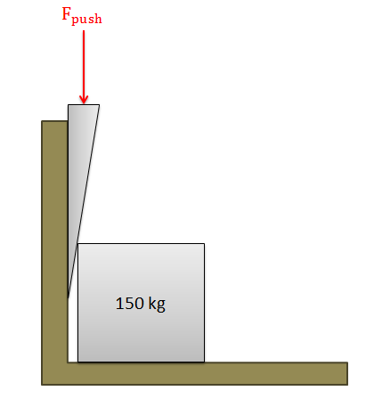
重い金庫（150 kg）を壁から離すため、くさび（頂角 $5°$、質量は無視）を壁と金庫の上の角の間に、上から鉛直に打ち込む。くさびの金庫側の面は、鉛直から $5°$ 傾いている。摩擦係数（静止・動摩擦とも同じ値）は、くさびと金庫の間が $0.16$、くさびと壁の間・金庫と床の間はともに $0.35$。金庫を動かすのに必要な力 $F$ を求めよ。（$g=9.81\ \mathrm{m/s^2}$。）
出典：Moore ほか, Mechanics Map, 7.3 Wedges, 例題2（CC 表示・継承、版は不明）。公式解答（$F=339.3$ N、$N_1=564.6$、$N_2=574.9$、$N_3=1613.2$ N）と照合済み。公式の $N_2=574.9$ は丸めで、本教材の計算は $574.83$。
解答
① 系：くさびと金庫を別々に切り出す（3章の型）。未知数：壁がくさびに及ぼす垂直抗力 $N_1$（右向き）、くさびと金庫の間の垂直抗力 $N_2$（面に垂直）、床が金庫に及ぼす垂直抗力 $N_3$、押す力 $F$。摩擦は、「金庫が動き出す直前」なので3面とも $\mu N$。
② 座標：右を $x$、上を $y$。くさびの面は鉛直から $5°$ なので、$N_2$ は水平から $5°$ だけ下向きに傾く（水平成分 $\cos5°$、鉛直成分 $\sin5°$）。
③ 摩擦の向き（運動しようとする向きの逆）：くさびは下へ動く。よって、壁がくさびに及ぼす摩擦 $0.35N_1$ は上向き。くさびと金庫の間の摩擦 $0.16N_2$：くさびに対しては面に沿って上向き、金庫に対しては逆向き（作用・反作用）で面に沿って下向き。金庫は右へ動こうとするので、床の摩擦 $0.35N_3$ は左向き。
④ 釣合い式：
金庫（$x$）：$N_2\cos5°-0.16N_2\sin5°-0.35N_3=0$ （面に沿って下向きの摩擦 $0.16N_2$ は、水平には左向きに $\sin5°$ の成分）
金庫（$y$）：$N_3-N_2\sin5°-0.16N_2\cos5°-mg=0$
くさび（$x$）：$N_1-N_2\cos5°+0.16N_2\sin5°=0$
くさび（$y$）：$F-0.35N_1-0.16N_2\cos5°-N_2\sin5°=0$
⑤ 解く：金庫の2式から $N_3$ を消す。$N_3=mg+N_2(\sin5°+0.16\cos5°)=1471.5+0.2466N_2$。これを金庫の $x$ 式に代入：$N_2(0.99619-0.01394)=0.35(1471.5+0.2466N_2)$。$0.98225N_2-0.08631N_2=515.0$。よって
$$N_2=\frac{515.0}{0.89594}=574.8\ \text{N},\qquad N_3=1471.5+0.2466\times574.8=1613.2\ \text{N}$$
くさびの $x$ 式：$N_1=574.8\times(0.99619-0.01394)=564.6$ N。$y$ 式：
$$F=0.35\times564.6+574.8\times(0.15939+0.08716)=197.6+141.7=\mathbf{339.3}\ \text{N}$$
⑥ 確かめ：金庫に必要な力は、床の摩擦に打ち勝つだけなら $0.35\times1471.5=515$ N の水平力。くさびは、$F=339$ N の鉛直力を、約 $\dfrac{574.8\times0.996}{339.3}=1.7$ 倍の水平力に変えている（ほぼ摩擦のない 5° のくさびなら $\dfrac1{\tan5°}=11$ 倍だが、3面の摩擦で大きく減る）。$N_1$、$N_2$、$N_3$ がすべて正 ✓。
答 $F=339$ N。（$N_1=565$ N、$N_2=575$ N、$N_3=1613$ N。）
自動車整備用のねじ式リフトが、20 kN の荷重まで支える。ねじ面の摩擦係数を $\mu=0.1$ とする。(a) セルフロックになる（荷重を下ろす向きにねじが回らない）リード角 $\theta$ の条件を求めよ。(b) ねじの直径を 5 cm とし、モーターのトルク 60 N·m で 20 kN を持ち上げたい。ねじの最大のピッチを求めよ。（公式解答は、直径 5 cm の半径 2.5 cm を、力のモーメントの腕として使っている。講義資料の4.1節の記号では、$\alpha$ がリード角、$\lambda$ が摩擦角。）
出典：Moore ほか, Mechanics Map, 7.4 Power Screws, 例題2（CC 表示・継承、版は不明）。公式解答（(a) $5.7°$、(b) $\theta=1.132°$、ピッチ 3.1 mm）と照合済み。公式は直径 5 cm を平均半径 2.5 cmとみなしている（実際には、ねじ谷径と山径の平均を使う）。
解答
(a) ① 4.1 節の自己ロックの条件：$\alpha\le\lambda$。$\lambda=\arctan\mu=\arctan0.1=\mathbf{5.71°}$。したがってリード角 $\alpha\le5.7°$。
(b) ① 系：ねじ。モーターのトルク $T$ は、半径 $r=2.5$ cm に作用する接線力 $P$ が作るモーメント：$T=Pr$。
② ③④ 締める（持ち上げる）力は (4.4)：$P=Q\tan(\alpha+\lambda)$（軸力 $Q=W=20$ kN）。よって
$$T=Q\,r\tan(\alpha+\lambda)\ \Longrightarrow\ \tan(\alpha+\lambda)=\frac{T}{Qr}=\frac{60}{20000\times0.025}=0.12$$
⑤ $\alpha+\lambda=\arctan0.12=6.843°$。$\lambda=5.711°$ を引いて $\alpha=\mathbf{1.132°}$。リード（ねじが1回転で進む距離）は、らせんを展開した斜面の高さ：$l=2\pi r\tan\alpha=2\pi\times25\ \text{mm}\times\tan1.132°=\mathbf{3.10}$ mm。一条ねじではリード＝ピッチ。
⑥ 確かめ：(b) の $\alpha=1.13°$ は (a) の条件 $\alpha\le5.7°$ を満たすので、自己ロックする（持ち上げたあとに、荷重でねじが戻らない）✓。摩擦がなければ（$\lambda=0$）$\tan\alpha=0.12$ で $\alpha=6.84°$、ピッチ 18.8 mm。摩擦があるぶん、ねじ山を細かくしなければならない。
答 (a) $\alpha\le5.7°$。(b) 最大のピッチ 3.1 mm（$\alpha=1.13°$）。
質量 5 kg の物体を、板の上に置く。板を水平から少しずつ傾けていくと、傾斜が $35°$ になったとき、物体が滑り出した。(a) 静止摩擦係数 $\mu_s$ はいくらか。(b) 傾斜が $20°$ のとき、物体に働く摩擦力と垂直抗力はいくらか。（$g=9.81\ \mathrm{m/s^2}$）
(a) 式 (2.2)：$\mu_s=\tan35°=\mathbf{0.700}$。
(b) 滑らないので型 (I)：釣合い式 $F_s=mg\sin20°=5\times9.81\times0.3420=\mathbf{16.8}$ N（斜面に沿って上向き）、$N=mg\cos20°=49.05\times0.9397=\mathbf{46.1}$ N。確かめ：$F_s=16.8<\mu_sN=0.700\times46.1=32.3$ N ✓（上限の内側）。$F_s=\mu_sN=32.3$ ではない。
質量 80 kg の荷物を、ボラード（円柱）に 1.5 回巻いたロープで吊って支える。ロープと円柱の摩擦係数は $0.3$。手で支える力の最小値はいくらか。（$g=9.81\ \mathrm{m/s^2}$）
巻き角 $\alpha=1.5\times2\pi=3\pi$ rad。荷物側の張力 $T_1=mg=80\times9.81=784.8$ N。式 (4.9)：$T_2=T_1e^{-\mu\alpha}=784.8\times e^{-0.3\times3\pi}=784.8\times e^{-2.827}=784.8\times0.0592=\mathbf{46.4}$ N。確かめ：荷物の約 6% の力で支えられる。巻き数を増やすほど指数関数的に小さくなる（図4.1）。
例題6と同じ物体（A：3 kg、B：2 kg、摩擦係数は A–B 間 0.3、B–床間 0.2、$g=9.8\ \mathrm{m/s^2}$）で、今度は下の B に水平力 $P$ を加え、増やしていく。B が動き出す直前の $P$ と、そのときの A–B 間の摩擦力を求めよ。
動き出す直前は、A も B も静止。A に水平方向の外力はないので、A–B 間の摩擦力は $F_A=\mathbf{0}$（A は摩擦なしで B の上に載っている）。B–床間：$N_B=(3+2)\times9.8=49.0$ N、$F_{B\,\max}=0.2\times49.0=9.8$ N。B の水平の釣合い：$P-F_B=0$ より、動き出す直前は $P=\mathbf{9.8}$ N（A–B 間の摩擦は 0）。例題6の「A を押す」場合（8.82 N）より大きいのは、A–B 間の摩擦が $P$ を受けもたないから。
（動き出したあとは、A は摩擦で B に引きずられる。そのとき A が滑らない最大の加速度は $\mu_{AB}g=2.94\ \mathrm{m/s^2}$。動力学の内容。）
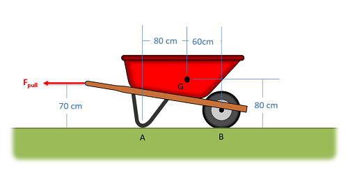
質量 60 kg の一輪車の脚 A と地面の間の静止摩擦係数は $0.4$（車輪 B の摩擦は無視してよい）。左向きに、地面から 70 cm の高さで水平な力 $F_{pull}$ を引くとき、一輪車が動き出す直前の $F_{pull}$ はいくらか。（脚 A から重心 G までの水平距離 80 cm、G から車輪 B まで 60 cm。$g=9.81\ \mathrm{m/s^2}$）
出典：Moore ほか, Mechanics Map, 7.1 Dry Friction, 例題4（CC 表示・継承）。公式解答（$F=126.1$ N、$N_A=315.3$ N）と照合済み。公式の手書き式は $\Sigma M_A$ の符号が行ごとに不統一だが、最終値は正しい。
車輪 B は摩擦なしで、地面からの力は垂直抗力 $N_B$ のみ。A：$N_A$、摩擦力 $f$（動こうとする向きの逆）。水平：$F-f=0$、鉛直：$N_A+N_B=mg$、A まわりのモーメント：$F\times0.7$（引く力の腕は 70 cm）$+N_B\times1.4-mg\times0.8=0$（G の腕は 0.8 m、B の腕は A–B 間 $0.8+0.6=1.4$ m）。動き出す直前 $f=0.4N_A$。
$N_A=mg-N_B$、$F=0.4N_A$ を代入：$0.7\times0.4N_A+1.4(mg-N_A)-0.8mg=0$ より $0.28N_A-1.4N_A=-0.6mg$、$N_A=\dfrac{0.6\times588.6}{1.12}=\mathbf{315.3}$ N、$F=0.4\times315.3=\mathbf{126.1}$ N。
確かめ：引く力を（上向き成分ではなく）水平に引くので、$N_A$ は重さの半分程度（$mg=588.6$ N の 54%）✓。
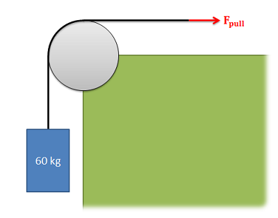
鋼のケーブルが 60 kg の質量を吊り、鋼の円柱の上を $\tfrac14$ 周（$\beta=\tfrac\pi2$）かかって、水平に引かれる。静止摩擦係数 $\mu_s=0.3$。(a) 持ち上げるのに必要な最小の引く力、(b) 落とさないために必要な最小の引く力はいくらか。（$g=9.81\ \mathrm{m/s^2}$）
出典：Moore ほか, Mechanics Map, 7.7 Belt Friction, 例題1（CC 表示・継承）。公式解答（(a) 942.9 N、(b) 367.4 N）と照合済み。
おもりの側の張力は $mg=588.6$ N。(4.9) は、「滑りかけるとき、引っ張られる（滑る）側が大きい張力」の関係。
(a) 持ち上げる：手の側が大きい張力。ケーブルは手の側へ滑ろうとするので $F=mg\,e^{\mu\beta}=588.6\times e^{0.3\times\pi/2}=588.6\times1.602=\mathbf{942.9}$ N。
(b) 落とさない：おもりの側が大きい張力。$F=mg\,e^{-\mu\beta}=588.6\times0.6242=\mathbf{367.4}$ N。
確かめ：(b) < 588.6 N < (a)。この範囲の力なら、ケーブルは滑らない（静止）。
質量 70.0 kg の人が、質量 10.0 kg・長さ 6.00 m のアルミのはしごを、床の端（底）が家の壁から 2.00 m の位置になるように立てかける。はしごは、壁の上端の樋（摩擦なしと仮定。力は壁に垂直、すなわち水平）にもたれる。はしごの重心は底から 2.00 m の位置、人は底から 3.00 m の位置に立つ。(a) 底での垂直抗力と摩擦力を求めよ。(b)（発展）静止摩擦係数が $0.30$ のとき、人は底から何 m まで登れるか。（$g=9.8\ \mathrm{m/s^2}$。原問は文章のみで図がない。）
出典：OpenStax, University Physics Volume 1, 第12章 問題37（CC BY-NC-SA 表記。https://openstax.org/books/university-physics-volume-1/pages/12-problems）。(a) は奇数番号の公式解答（$N=784$ N、$f=132.8$ N）と照合済み。(b) は本教材の自作の発展設問で、公式解答はない（自作の解答）。
(a) ① 系：はしごと人（全体）。外力：重さ $70g$（人）と $10g$（はしご）、底の垂直抗力 $N$ と摩擦力 $f$、樋の水平な反力 $P$。
② 壁の高さ：$h=\sqrt{6.00^2-2.00^2}=5.657$ m。
③④ 鉛直：$N=(70+10)\times9.8=\mathbf{784}$ N。水平：$f=P$。底まわりのモーメント（$N$、$f$ は消える）：重さの腕は、底から水平に測って、人 $3\times\dfrac26=1.00$ m、はしご $2\times\dfrac26=0.667$ m。樋の反力 $P$ の腕は高さ $h=5.657$ m：
$$P\times5.657=70\times9.8\times1.00+10\times9.8\times0.667=686+65.3\ \Longrightarrow\ P=\frac{751.3}{5.657}=132.8\ \text{N}$$
$f=P=\mathbf{132.8}$ N。確かめ：必要な $\mu_s\ge132.8/784=0.169$（床はこれ以上なら滑らない）。
(b) 人が底から $s$ m の位置にいるとき、人の腕は $s\times\dfrac13$ m：$P\,h=686\cdot\dfrac s3+65.3$。滑る限界は $f=P=\mu_sN=0.30\times784=235.2$ N。$235.2\times5.657=1330.5=\dfrac{686}{3}s+65.3$ より $s=\dfrac{1265.2\times3}{686}=\mathbf{5.53}$ m（はしごの長さ 6.00 m の手前まで）。確かめ：$s=3$ のとき $f=132.8$ N、$s$ が大きくなるほど $f$ が増える。
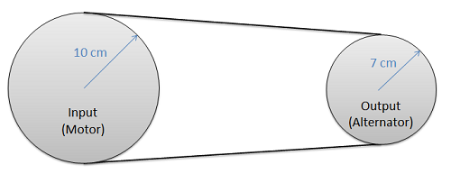
平ベルトで、モーター（半径 10 cm のプーリー）から、オルタネーター（半径 7 cm）へ動力を伝える。摩擦係数は $0.5$、伝える動力は 100 W、入力軸の回転数は 1000 rpm（出力軸は 1428.6 rpm）。ベルトが接触する角は、どちらのプーリーも約 $180°$（$\pi$）とする。ベルトが滑らないために必要な、ゆるみ側の張力の最小値を求めよ。
出典：Moore ほか, Mechanics Map, 7.7 Belt Friction, 例題3（CC 表示・継承）。公式解答（$T_{rest}=2.51$ N）と照合済み。公式の解答は記号 $T_1$ と $T_{rest}$ が混在しており、本教材では「ゆるみ側の張力」と読んで解いた。遠心力による張力は無視。
① 入力軸の角速度 $\omega=1000\times\dfrac{2\pi}{60}=104.72$ rad/s。伝達トルク $M=\dfrac{100}{104.72}=0.955$ N·m。
② 入力プーリー（半径 $r=0.10$ m）まわりのモーメントの釣合い：$M=(T_1-T_2)r$、$T_1$ は張り側、$T_2$ はゆるみ側。$T_1-T_2=\dfrac{0.955}{0.10}=9.549$ N。（出力側：$M'=100/149.6=0.668$ N·m、$r'=0.07$ m で $0.668/0.07=9.549$ N。同じ。）
③ 滑る直前：(4.9) より $\dfrac{T_1}{T_2}=e^{\mu\beta}=e^{0.5\pi}=4.810$。
④ 2式を解く：$T_2(4.810-1)=9.549$ より $T_2=\dfrac{9.549}{3.810}=\mathbf{2.51}$ N（$T_1=12.06$ N）。
確かめ：$T_1-T_2=12.06-2.51=9.55$ ✓。張力の差が動力を伝える。
| 講義資料 | 本教材 |
|---|---|
| p.1–2 3・3 摩擦力の扉、今日のポイント | 序 |
| p.3–4 3・3・1 固体摩擦、$F_s$、$F_{s\,\max}$、$F_k$（式 3.63、3.64） | 1.1 |
| p.5 鉄との静止摩擦係数の例（表） | 1.2 |
| p.6 作用力と摩擦力の関係（グラフ） | 1.1（図1.1とスライドの図） |
| p.7 摩擦の概念（凹凸、接触部分） | 1.2 |
| p.8 例題3・6（斜面、摩擦角） | 2.2 |
| p.9 3・3・2 摩擦が作用する釣合い（注意） | 2.1 |
| p.10–12 例題3・7（棒、解答例1・2） | 2.3 |
| p.13–17 例題（$P$ を増加、解答例1・2、摩擦力の向き） | 2.4 |
| p.18–22 例題（A・B、摩擦面が2つ） | 3章 |
| p.23–24 補足資料：摩擦、摩擦の法則 | 1.2 |
| p.25–27 ねじ、ねじのモデル | 4.1 |
| p.28–30 ロープ、ベルト | 4.2 |
| p.31–33 例題（ロープ）、ロープの摩擦の利用例 | 4.2 |
| p.34 転がり | 4.3 |
| （資料にない：台車の滑りと転倒、斜め引き、摩擦円錐） | 5章、2.5、2.2（本教材の追加） |


.jpg){kind=link}

.jpg){kind=link}


.jpg){kind=link}

_(14580556070).jpg){kind=link}